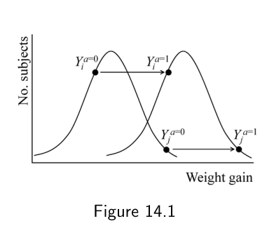
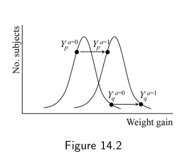
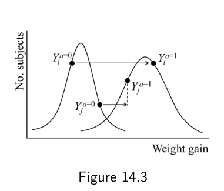

第二部分 · 基于模型的因果推断 · Part II — Causal inference with models
第 14 章 · 结构嵌套模型的 g 估计
Hernán MA, Robins JM（2020）. Causal Inference: What If. Chapter 14. 本页为中文全文翻译，附译注。
在前两章里，我们用逆概率加权和标准化两种方法估计了戒烟（处理）对体重增加（结局）的平均因果效应。本章要介绍估计平均因果效应的第三种方法：g 估计。我们沿用同一套 NHEFS 观察性数据，并给出执行分析的简易计算机代码。逆概率加权、标准化和 g 估计三者常被合称为 g 方法（g-methods），因为它们的设计初衷是处理随时间变化的、广义的处理对比。正因如此，在本书第二部分把它们用在固定不变的处理上或许有点"杀鸡用牛刀"，毕竟存在更简单可行的替代方案。不过，先在一个相对简单的场景下讲清楚 g 方法，我们就能把注意力放在它们的核心特征上，而不必被第三部分才会涉及的那些复杂问题分散精力。逆概率加权和标准化在第一部分（第 2 章）就已引入，随后在第二部分（分别在第 12、13 章）以模型的面貌再次出现；相比之下，g 估计我们一直留到第二部分才讲。这背后有原因：要讲清 g 估计，最好先给出一个结构模型（哪怕是个饱和模型）。用 g 估计来估计参数的那些模型，就叫做结构嵌套模型（structural nested models）。这三种 g 方法建立在不同的建模假设之上。
14.1 重访因果问题
和前面几章一样，我们把分析限定在 NHEFS 中那些基线（1971–75）和随访（1982）访视时性别、年龄、种族、体重、身高、教育、饮酒量、吸烟强度等信息齐全，且在基线回答了病史问卷的个体。我们对这些个体应用逆概率加权和标准化，估计戒烟（处理，记作 A）对体重增加（结局，记作 Y）的平均因果效应。所用的数据为 1566 名 25–74 岁的吸烟者：若某人戒了烟，记为已处理 A = 1，否则记为未处理 A = 0。我们假设，在给定变量 L（性别、年龄、种族、教育、吸烟强度与时长、日常体力活动、休闲锻炼、体重）的条件下，已处理者与未处理者满足可交换性。在差量尺度上，我们把平均因果效应定义为 E[Ya=1,c=0] − E[Ya=0,c=0]，也就是"假如所有人都不删失且接受处理"与"假如所有人都不删失且未接受处理"相比，预期会观测到的平均体重之差。
量 E[Ya=1,c=0] − E[Ya=0,c=0] 衡量的是整个研究人群的平均因果效应。但有时我们会对其中某个子群的平均因果效应感兴趣。比如，想估计 45 岁个体中的平均因果效应——E[Ya=1,c=0 | 年龄 = 45] − E[Ya=0,c=0 | 年龄 = 45]——或者女性中的、低教育水平者中的，等等。要估计某个子群的效应，可以用带乘积项的边际结构模型（见第 12 章），也可以只对该子群做标准化（第 13 章）。
再设想一种情形：研究者想针对由 L 各变量取值组合所界定的每一个层，分别估计戒烟 A 对体重增加 Y 的因果效应。在我们的例子里，这样的层有很多。其中一个是{不戒烟、女性、白人、26 岁、大学辍学、每天 15 支烟、烟龄 12 年、中等锻炼、非常活跃、体重 112 公斤}。如第 4 章所述，手头数据量极大的研究者可以把研究人群切分成互不重叠的若干子集（层），每一层由变量 L 的一组特定取值 l 来界定，再逐层估计平均因果效应。第 12.5 节提到过一个替代做法：把全部 L 变量，以及 L 各分量与处理 A 的乘积项，统统加进边际结构模型。这样一来，稳定化权重 SWA(L) 全等于 1，也就无需再做逆概率加权——因为那个（未加权的）结局回归模型，只要设定正确，就能完全调整掉 L 带来的全部混杂（见第 15 章）。
本章我们将用 g 估计，来估计在由协变量 L 界定的每一层里，戒烟 A 对体重增加 Y 的平均因果效应。这个条件效应表示为 E[Ya=1,c=0 | L] − E[Ya=0,c=0 | L]。在讲 g 估计之前，我们会先介绍结构嵌套模型和秩保持（rank preservation），并在下一节用一种新方式重新表述"给定 L 的可交换性"。
14.2 重访可交换性
作为提醒（见第 2 章）：在我们的例子里，条件可交换性意味着，在研究人群中任意一组 L 取值相同的个体里，那些没戒烟的人（A = 0），如果当初戒了烟，其平均体重增加会和真正戒了烟的人（A = 1）一样；反之亦然。换句话说，条件可交换性说的是：如果两组接受了同一处理水平，那么已处理组和未处理组的结局分布应当相同。当在给定协变量条件下、处理水平 a 下的结局 Ya 分布在已处理组和未处理组相同时，每一个反事实结局 Ya 都与实际处理水平 A 独立——也就是对 a = 1 和 a = 0 都有 Ya ⊥⊥ A | L。
取无处理条件下的反事实结局 Ya=0。当条件可交换性成立，知道 Ya=0 的取值并不能帮你区分某个 L 取值下的人是戒烟者还是不戒烟者。也就是说，反事实结局 Ya=0 取任何值时，给定 L 的戒烟条件概率都不变。用式子写出来就是
Pr[A = 1 | Ya=0, L] = Pr[A = 1 | L]
这等价于对二值处理 A 的条件可交换性的另一种定义。
把条件可交换性用"处理的条件概率"来表达，等到本章后面讲 g 估计时会很有用。具体地，假设我们为处理的概率提出下面这个带参数的 logistic 模型
logit Pr[A = 1 | Ya=0, L] = α0 + α1 Ya=0 + α2 L
其中 α2 是一个参数向量；若 L 有 p 个分量 L1, …, Lp，则 α2 L = Σj=1p α2j Lj。这个模型和我们在第 12 章用来估计逆概率加权分母的模型是同一个，区别只在于它把反事实结局 Ya=0 也当成了协变量。
当然，我们永远没法把这个模型直接拟合到真实数据集上，因为并不是所有人都知道 Ya=0 的值。但请你暂且假设我们手上每个人都有 Ya=0 的数据，并且拟合了上面的 logistic 模型。如果条件可交换性成立、且模型设定无误，你预期参数 α1 的估计值会是多少？先停下来想一想再往下看（答案就在本段末尾附近），因为等我们真正实施 g 估计时，要估计的正是这个 α1。如果你已经猜到了它该取什么值，那你就已经懂得了 g 估计的一半。没错，α1 估计值的期望是零，因为在给定 L 时 Ya=0 并不预测 A。下面讲 g 估计的另一半：结构模型。
14.3 结构嵌套均值模型
我们想估计在 L 各层之内处理 A 的平均因果效应，即 E[Ya=1 | L] − E[Ya=0 | L]。（为简单起见，本节前半段先假设没有删失。）它也可以写成 E[Ya=1 − Ya=0 | L]，因为均值的差等于差值的均值。如果 L 不存在效应修饰，这些差值在各层间应当是常数，即 E[Ya=1 − Ya=0 | L] = β1，此时 β1 既是每一层的平均因果效应，也是整个人群的平均因果效应。我们关于这个条件因果效应的结构模型就是 E[Ya − Ya=0 | L] = β1 a。与针对条件均值 E[Ya | L] 的模型不同，针对均值差 E[Ya − Ya=0 | L] 的模型既不含截距 β0，也不含 β2 L 项，因为这两项在计算差值时相互抵消了。
更一般地说，L 可能存在效应修饰。例如，戒烟的因果效应在重度吸烟者中或许比轻度吸烟者中更大。为了让因果效应可以依赖 L，我们可以在结构模型里加一个乘积项：E[Ya − Ya=0 | L] = β1 a + β2 aL，其中 β2 是参数向量。在条件可交换性 Ya ⊥⊥ A | L 成立时，由于已处理者和未处理者在每一层 L 内平均而言是同类人，条件效应在两组间相同。于是，在可交换性下，结构模型也可写作
E[Ya − Ya=0 | A = a, L] = β1 a + β2 aL
这被称为结构嵌套均值模型（structural nested mean model）。由 g 估计得到的参数 β1 和 β2（同样是个向量）量化了在 A 和 L 各层之内，戒烟 A 对 Y 的平均因果效应。Robins（1994）首次提出了结构嵌套模型这一类方法。当处理随时间变化时，这些模型被称为"嵌套"的，详见第三部分。在第 13 章里，我们曾考虑过针对均值结局 Y 的参数化模型——和标准嵌套模型一样，它们也以处理 A 和协变量 L 为条件。那些结局模型是估计参数化 g 算法时做标准化的基础。与那些参数化模型不同，结构嵌套模型是半参数的：它对截距和 L 的主效应都"不予置评"——既没有参数 β0，也没有刻画 β3 L 项的参数 β3。正因为把这些参数留作未指定，结构嵌套模型所做的假设更少，相比参数化 g 算法对模型误设也更稳健。结构嵌套模型与第 12 章边际结构模型之间的关系，见精细辨析 14.1。
在有删失的情况下，我们关心的因果效应不再是 E[Ya=1 − Ya=0 | A, L]，而是 E[Ya=1,c=0 − Ya=0,c=0 | A, L]，也就是假如所有人始终保持未删失时的平均因果效应。估计这个差值，需要同时调整处理 A 带来的混杂偏倚和（由删失 C = 1 引起的）选择偏倚。正如前 two 章所述，逆概率加权和标准化可用来调整这两类偏倚；而 g 估计只能调整混杂，调不了选择偏倚。因此，使用 g 估计时，得先用逆概率加权把删失导致的选择偏倚调整掉。实践中，我们可以先估计针对删失的非稳定化逆概率权重，造出一个"无人被删失"的伪人群，再对伪人群施加 g 估计。在我们的戒烟例子里，可以用第 12 章估计过的非稳定化逆概率权重 WC = 1 / Pr[C = 0 | L, A]。我们同样假设，向量 L 足以同时调整混杂和选择偏倚。本章所有 g 估计分析都纳入了逆概率权重，以调整删失可能带来的选择偏倚。在"给定已测协变量 L 时、删失者与未删失者可交换"这一假设下，结构嵌套均值模型 E[Ya − Ya=0 | A = a, L] = β1 a + β2 aL，一旦作用到由逆概率权重 WC 造出的伪人群上，其实就是个无删失情形下的结构模型：
E[Ya,c=0 − Ya=0,c=0 | A = a, L] = β1 a + β2 aL
为简单起见，本章此后一律省略上标 c = 0。
本章我们将用结构嵌套均值模型的 g 估计来估计"戒烟"这个二值处理的效应，但结构嵌套模型同样可用于连续型处理变量——比如"吸烟强度的改变"（见第 12 章）。对连续变量，模型需要指明处理 A 对均值结局 Y 的剂量-反应函数。例如 E[Ya − Ya=0 | A = a, L] = β1 a + β2 a2 + β3 aL + β4 a2 L，或者 E[Ya − Ya=0 | A = a, L] 可以是 A 和 L 的某个光滑样条函数。关于二值结局的结构嵌套均值模型，见技术要点 14.1。
接下来我们把注意力转向秩保持这个概念，它将帮助我们描述结构嵌套模型的 g 估计。
14.4 秩保持
在我们的戒烟例子里，所有人都可以按观测结局 Y 的大小排个名次：23522 号排第一，体重增加 48.5 公斤；6928 号排第二，增加 47.5 公斤……23321 号垫底，增加 −41.3 公斤。类似地，我们也可以设想按处理下的反事实结局 Ya=1 给所有人排名——前提是如果每个人（而不只是实际接受了处理的人）的 Ya=1 都已知的话。再假设我们真的能同时按 Ya=1 和 Ya=0 给所有人排名，于是得到两份按相应反事实结局从大到小排列的名单。如果这两份名单顺序完全一致，我们就说存在秩保持（rank preservation）。
当处理 A 对结局 Y 的效应，在加法尺度上对研究人群中所有人都完全相同时，我们说加法秩保持成立。例如，如果戒烟让每个人的体重精确地增加 3 公斤，那么按 Ya=0 排出的名次，会和按 Ya=1 排出的名次一致——只不过在后一份名单里每个人都重了 3 公斤。加法秩保持的一个特例是锐零假设成立时（见第 1 章），即处理对研究人群中任何个体的结局都毫无影响。就结构嵌套均值模型而言，我们关心的是 L 各层之内的加法秩保持：当处理 A 对结局 Y 的效应，对 L 取值相同的所有个体都完全一样时，条件加法秩保持成立。
一个（条件加法）秩保持结构模型的例子是
Yia − Yia=0 = ψ1 a + ψ2 a Li 对所有人 i
其中 ψ1 + ψ2 l 是协变量取值 L = l 的所有个体的恒定因果效应。也就是说，对每个 L = l 的个体 i，其 Yia=1 等于 Yia=0 + ψ1 + ψ2 l：个体在无处理下的反事实结局 Yia=0 被平移 ψ1 + ψ2 l，就得到其在处理下的反事实结局。图 14.1 给出了层 L = l 内加法秩保持的一个例子。钟形曲线代表反事实结局 Ya=0（左曲线）和 Ya=1（右曲线）的分布。图上半部分的两个点代表个体 i 的两个反事实结局取值，下半部分的两个点代表个体 j 的两个取值。箭头表示从 Ya=0 到 Ya=1 的平移，在本层所有个体中都等于 ψ1 + ψ2 l。

图 14.2 给出了另一层 L = l′ 内秩保持的例子。其中反事实结局的分布与层 L = l 中的不同——例如图 14.1 中 Ya=0 的均值位于图 14.2 中 Ya=0 均值的左侧，意味着平均而言 L = l 层个体在不戒烟时的体重增加小于 L = l′ 层个体。对 L = l′ 的所有个体，从 Ya=0 到 Ya=1 的平移是 ψ1 + ψ2 l′，图中对个体 p 和 q 标出了这一点。

对大多数处理和结局而言，个体的因果效应预计并不恒定——甚至近似恒定都谈不上——跨所有 L 取值相同的个体，因此（条件加法）秩保持从科学上讲并不可信。在我们的例子里，我们并不指望戒烟对所有 L 取值相同的人产生同样体重影响。有些人——出于基因或其他原因——比其他人更容易受戒烟影响，即便在协变量 L 各层之内也是如此。戒烟的个体因果效应会因人而异：戒烟后有人增重很多，有人增重很少，还有人甚至可能减掉一些体重。现实更可能像图 14.3 描绘的情形：从 Ya=0 到 Ya=1 的平移在 L 取值相同的个体间各不相同，甚至连名次都无法保持——因为当 a = 0 时个体 i 的结局小于个体 j，而 a = 1 时并非如此。

正因为秩保持难以置信，一般不应使用依赖它的因果推断方法。事实上，本书讨论的方法没有一种需要秩保持。例如，第 12 章的边际结构均值模型针对的是平均因果效应，而非个体因果效应，因此并不假设秩保持。戒烟对体重增加的平均因果效应估计为 3.5 公斤（95% 置信区间：2.5, 4.5）。这个平均效应并不关心个体因果效应是否满足秩保持。类似地，上一节的结构嵌套均值模型也没有对秩保持做任何假设。
本节给出的加法秩保持模型，比非秩保持模型做了强得多的假设：它假定对 L 取值相同的所有个体，处理效应恒定。我们没有任何理由在实践里使用这种不切实际的秩保持模型。然而下一节介绍 g 估计时，我们却要借它来引入——因为对秩保持模型而言 g 估计更容易理解，而且 g 估计的步骤对秩保持和非秩保持模型其实一模一样。注意，（条件加法）秩保持结构模型本身也是一种结构均值模型——个体从 Ya=0 到 Ya=1 的平移之均值，等于 L 各层内每一个体的平移值。
14.5 g 估计
本节把前面三节的内容串起来。假设目标是估计结构嵌套均值模型 E[Ya − Ya=0 | A = a, L] = β1 a 的参数。为简单起见，先考虑只有一个参数 β1 的模型。因为模型没有 β2 aL 这类乘积项，我们实质上假设了戒烟的平均因果效应在各 L 层间恒定，即 L 不存在加法型效应修饰。
我们还假设，对所有个体 i，加法秩保持模型 Yia − Yia=0 = ψ1 a 设定无误。于是个体的因果效应 ψ1 就等于我们感兴趣的那个平均因果效应 β1。我们把秩保持模型写作 Ya − Ya=0 = ψ1 a，省略个体下标 i，因为该模型对所有人相同。出于马上会明白的理由，我们把模型等价地改写成
Ya=0 = Ya − ψ1 a
g 估计的第一步，是把模型与实际观测数据挂上钩。要做到这点，回想一下：由一致性，一个人的观测结局 Y 就是，若此人接受了处理 A = 1 则为反事实结局 Ya=1，若未接受处理 A = 0 则为反事实结局 Ya=0。因此，如果我们把结构模型里固定的 a 换成每个人的实际取值 A——有人是 1，有人是 0——那么就可以把反事实结局 Ya 替换成这个人的观测结局 YA = Y。
秩保持结构模型于是蕴含了这样一个等式：每个人的反事实结局 Ya=0 都是其处理、结局观测值，以及未知参数 ψ1 的函数：
Ya=0 = Y − ψ1 A
如果这个模型正确，且我们已知 ψ1 的值，就能算出研究人群中每个人在无处理下的反事实结局 Ya=0。但我们并不知道 ψ1，估计它正是我们分析的目标。
我们来玩个游戏。假设你有个朋友知道 ψ1 的值，但他只告诉你 ψ1 是下面三个之一：ψ† = −20、ψ† = 0，或 ψ† = 10。他向你挑战："你能从这三个候选值 ψ† 里认出真正的 ψ1 吗？"你接受了挑战。对每个人，你分别计算
H(ψ†) = Y − ψ† A
对上述三个 ψ† 各自的值。新造出来的变量 H(−20)、H(0)、H(10) 都是候选反事实。其中只有一个是真正的反事实结局 Ya=0：更确切地说，当且仅当 ψ† = ψ1 时，H(ψ†) = Ya=0。在这个游戏里，挑出正确的 ψ1 值，就等价于挑出三个候选反事实 H(ψ†) 中哪一个是真正的 Ya=0 = H(ψ1)。你能想出办法来选出那个正确的 H(ψ†) 吗？
回想 14.2 节：条件可交换性假设可以写成"给定反事实结局与协变量 L 时处理"的 logistic 模型。当条件可交换性成立，反事实结局对应的参数 α1 应当为零。于是我们有了个简单的办法，从三个变量 H(ψ†) 中选出真正的反事实：我们分别拟合三个 logistic 模型
logit Pr[A = 1 | H(ψ†), L] = α0 + α1 H(ψ†) + α2 L
每个候选 H(ψ†) 各拟合一个。其中 α1 = 0 的那个候选 H(ψ†) 就是 Ya=0，相应的 ψ† 就是真值 ψ1。例如，假设 H(ψ† = 10) 在给定协变量 L 时与处理 A 毫不相关，那么我们对 ψ1 的估计 ψ̂1 就是 10。大功告成。这就是 g 估计。
然而在实践中，我们并没有一个知道答案又爱玩游戏的朋友。所以我们得在所有可能的 ψ† 值里搜索，直到找出那个能让 H(ψ†) 的 α1 = 0 的值。由于不可能逐个检验所有值——任意区间内都有无穷多个 ψ†——我们可以在 ψ† 从 −20 到 20、步长 0.01 的范围内做一轮精细搜索。搜索越细，得到的估计 ψ̂1 就越接近真值，但计算量也越大。
在我们的戒烟例子里，我们先算出每个人在 ψ† 介于 2.0 到 5.0、步长 0.1 时的 31 个候选值 H(2.0)、H(2.1)、……、H(4.9)、H(5.0)。然后为戒烟概率拟合 31 个独立的 logistic 模型。这些模型和我们在第 12 章用于估计逆概率加权分母的模型一模一样，区别只是每个模型里多加了 31 个候选 H(ψ†) 中的一个。候选 H(ψ†) 对应的参数估计 α̂1，在 H(3.4) 和 H(3.5) 处最接近零。更细的搜索发现，α̂1 的极小值（实质上就是零）出现在 H(3.446)。于是，戒烟对体重增加的平均因果效应 ψ1 = β1 的 g 估计 ψ̂1 为 3.4 公斤。
要计算围绕 3.4 这个 g 估计的 95% 置信区间，我们用了上面拟合的 logistic 模型中 α1 = 0 的 Wald 检验的 P 值。不出所料，对 ψ† = 3.446 而言 P 值等于 1——确切地说是 0.998——正是那个能让候选 H(ψ†) 的参数估计 α̂1 = 0 的 ψ† 值。在我们对 ψ† 介于 2.0 和 5.0 拟合的 31 个 logistic 模型中，基于 ψ† 值大约在 2.5 到 4.5 之间的 H(ψ†) 的那些模型，P 值都大于 0.05。也就是说，套用常见的统计行话，在 5% 水平上，检验对 2.5 到 4.5 之间的那部分 ψ† 值"都不拒绝原假设"。通过对检验结果做反演，我们得出结论：3.4 周围 95% 置信区间的上下限就是 2.5 和 4.5。计算 95% 置信区间的另一个选择是对 g 估计过程做自助法（bootstrap）。
更一般地说，一个 g 估计的 95% 置信区间，由"检验 α1 = 0 时 P 值 > 0.05 的那组 ψ† 值"确定：对 α1 = 0 的统计检验做反演，置信区间的上下限就是那组 P 值 > 0.05 的 ψ† 值的上下限。在我们的例子里，由于用了逆概率加权来调整删失，统计检验基于稳健方差估计量。因此我们的 95% 置信区间在大样本下是保守的，也就是说它至少 95% 的次数能套住真值。大样本下，自助法会给出一个非保守、因而可能更窄的 g 估计 95% 置信区间。
回到非秩保持模型。针对 ψ1 的 g 估计算法（即实现该过程的计算机代码）能产生均值模型参数 β1 的一致估计，前提是均值模型设定无误（即平均处理效应在 L 各层都相等）。这一点不论个体处理效应是否恒定——也就是不论条件加法秩保持是否成立——都成立。换句话说，g 估计算法的有效性其实并不要求对所有人都有 H(β1) = Ya=0（β1 是均值模型里的参数值）；它只要求 H(β1) 与 Ya=0 在给定 L 下有相同的条件均值。
有意思的是，上面的 g 估计过程可以很容易地改造，纳入精细辨析 14.2 所描述的、针对未测量混杂的敏感性分析。
14.6 含两个或更多参数的结构嵌套模型
到目前为止，我们都只考虑只有一个参数 β1 的结构嵌套均值模型。没有 β2 aL 这类乘积项，意味着我们认为戒烟的平均因果效应在 L 各层间不变化。如果 L 的某些分量 V 确实存在效应修饰、而我们却没加 β2 aV 乘积项，那么结构嵌套模型就会被误设——我们的因果推断也就错了。这和第 12 章提到的饱和边际结构模型 E[Ya] = β0 + β1 a 形成对照：即便存在 V 的效应修饰，即便我们漏加了 β2 aV 和 β3 V 项，那个模型也不会被误设。不条件于 V 的边际结构模型估计的是人群中的平均因果效应，而条件于 V 的估计的是 V 各层之内的平均因果效应。结构嵌套模型按定义估计的就是协变量 L 各层之内的平均因果效应，而非人群中的平均因果效应。当存在效应修饰却省略乘积项，结构嵌套模型通常会因模型误设而产生偏倚。
所幸，上一节描述的 g 估计过程可以推广到带乘积项的模型。例如，假设我们认为戒烟的平均因果效应依赖于基线吸烟强度 V。我们可以考虑结构嵌套均值模型 E[Ya − Ya=0 | A = a, L] = β1 a + β2 aV。因为结构模型有两个参数 β1 和 β2，我们也要在针对 Pr[A = 1 | H(β†), L] 的逆概率加权 logistic 模型里放入两个参数，其中 β† = (β1†, β2†)，且 H(β†) = Y − β1† A − β2† AV。例如，我们可以拟合 logistic 模型
logit Pr[A = 1 | H(β†), L] = α0 + α1 H(β†) + α2 H(β†) V + α3 L
然后找出那对 β1†、β2† 的值，使得由此得到的 H(β†) 在给定协变量 L 时与处理 A 独立。也就是说，我们需要搜索 β1† 和 β2† 的组合，让 α1 和 α2 都等于零。因为这个模型有两个参数，搜索必须在一个二维空间里进行，所以系统性的"暴力"搜索会比上一节描述的过程更费事。
不过，尽管我们是用"参数搜索"来引出 g 估计的，搜索参数可能取值这件事对 g 估计一般并非必需。事实上，对于像这里讨论的线性均值模型，估计量可以直接用公式算出来，也就是有闭式解。对非线性结构嵌套均值模型，虽然没有闭式估计量，但我们可以用基于导数的标准优化技术（如牛顿-拉夫森法），因为 g 估计可以看作在求解模型参数的估计方程（细节见技术要点 14.2）。对某些生存分析用的结构嵌套模型，由于估计方程对模型参数不可微，就需要搜索（见第 17 章）。
在我们的戒烟例子里，g 估计结果为 β̂1 = 2.86、β̂2 = 0.03。相应的 95% 置信区间用自助法计算最为方便。在更一般的情况下，我们会考虑一个允许戒烟平均因果效应随 L 所有变量各层变化的模型。对二值处理，那个非饱和线性模型 E[Ya − Ya=0] = β1 a + a Σj=1p β2j Lj 有 p + 1 个参数 β1, β21, …, β2p，其中 β2j 是与乘积项 aLj 对应的参数，Lj 是 L 的 p 个分量之一。整个研究人群的平均因果效应则可计算为 β1 + (1/n) Σi Σj=1p β2j Lij，其中 n 为研究中的个体数。
讲完 g 方法之后，接下来我们回顾两种大概是最常用的混杂调整方法：结局回归和倾向性评分。